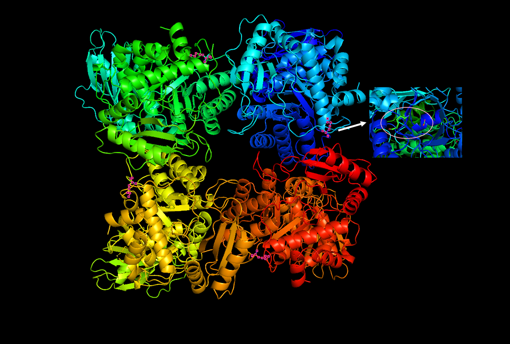
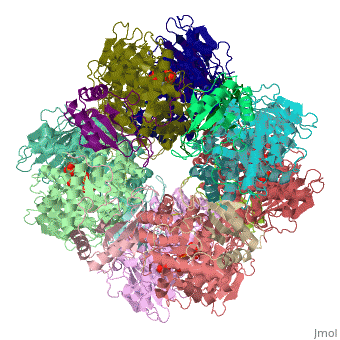

Shizen Technologies
Pollution
8.9 Million people are killed a year from pollution Diseases like ebola, HIV, and malaria rightly get a lot of a headlines, because they can kill millions of people very quickly. But there’s another problem that affects even more people, and it’s not mentioned as much: pollution. In all, pollution kills 8.9 million people a year, according to a new report, and as many as 200 million people suffer pollution-related health problems, including brain damage from exposure to lead, mercury, and pesticides. From Ghana to Kyrgyzstan, there are still thousands of appallingly polluted places, from electronic waste dumps to toxic old factories where chemicals continue to seep into the ground. One 2013 study of 373 sites in India, Indonesia and the Philippines estimated that 8.5 million people were at risk of serious disease—the equivalent burden of malaria and outdoor pollution combined.

Our Solution
Shizen is a research based startup, Working towards carbon captur through aritificial photosynthetic process, Who's all projects are under research/ideation face, but it's planning to rebrand it, Due to some legal issues. There are various
technologies to capture carbon dioxide and store it in underground geological formations or reduce it to one-carbon compounds, such as methane. Yet, storing is only a temporary solution and methane is of limited use. Scientists are therefore
trying to learn from biology. In fact, nature has invented carbon fixation with photosynthesis more than a billion years ago and has since expanded and refined it. Moreover, photosynthesis can convert carbon dioxide into complex molecules
with long carbon backbones. “Organisms have an unbelievable biosynthetic potential that is unmatched by chemical processes. Biology is very good at selectively building

complex carbon
molecules, and they can do so from atmospheric carbon dioxide” said Tobias Erb of the Max Planck Institute for Terrestrial Microbiology in Marburg, Germany. Researchers now aim to harness biology's synthetic ability to turn carbon dioxide
into more complex molecules to produce fuels, plastics, pharmaceuticals, or pigments. Moreover, nature is unmatched in terms of worldwide carbon fixation. “Nature transforms about 450 gigatons of carbon dioxide each year,” Erb said. Nonetheless,
while nature does capture a lot of carbon dioxide, it also uses a lot of space. Indeed, the most important biological mechanism for fixing carbon dioxide is very inefficient,
.
which is very much down to one enzyme: ribulose-1,5-bisphosphate carboxylase/oxygenase, or RuBisCo for short. It is the key enzyme of the Calvin cycle, which uses energy from the photosynthetic light reaction to convert carbon dioxide
and water into organic compounds. RuBisCo is the most abundant enzyme in nature and responsible for about 95% of the carbon fixed in the biosphere, but it is also very slow and unspecific. Researchers are therefore now looking into the
possibilities of improving RuBisCo's ability to fix carbon by metabolic engineering and synthetic biology.
Problem With It
So far, researchers have had little success in trying to improve RuBisCo. “It is in the nature of the enzyme. If you try to make it more specific, it gets slower. If you try to make it faster, it loses specificity,” Erb explained—reminiscent of the way people lose accuracy when they work under time pressure. But there are other ways to address the problem—just like there are ways to handle the problem of a slow-working employee. One strategy may be to improve the working environment to help an employee work to his or her full potential. Another possibility is to restructure workflow so that an inept colleague's mistakes are corrected by others. Last but not least, it may be wise to substitute an inefficient worker with someone more competent.